A partial list of work and work adjacent projects UK Election 2017 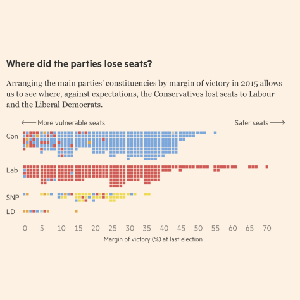 US Election 2016 EU referendum results 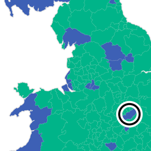 EU referendum polling Shigeo Fukuda D3 line simplification Chart Doctor: Explaining Brexit D3 icon array UK general election results 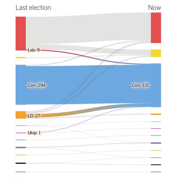 Compared to a tennis ball Bivariate Choropleths Maps: A Why-not Guide 2015 coalition calculator Deaths of the Iliad 10yrs of UK road crash data Middle East religions 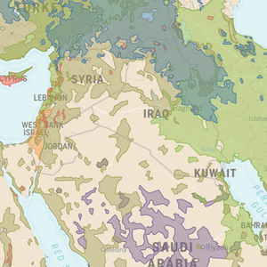 2015 election battlegrounds 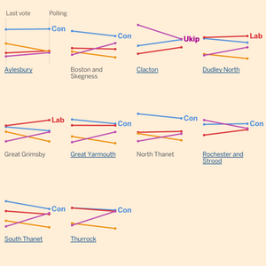 2005 Election results 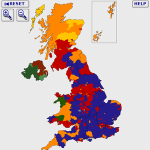 Just what is poor? Twitter valuation calculator 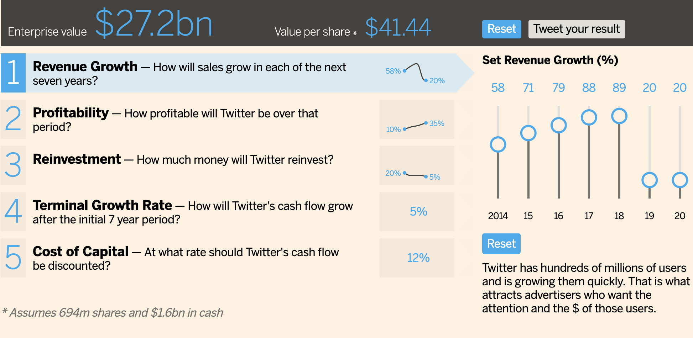 2010 Election seat calculator 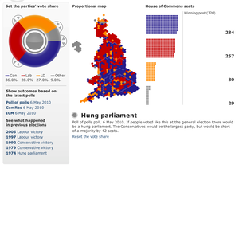 Scottish referendum results Swine flu timeline London rental affordability US Senate election 2014 Armed robbery — crime vs time Can chance make you a killer? 2010 govt. spending review 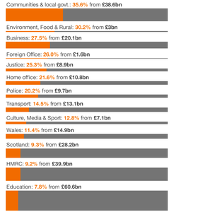 Battle of Britain Bush's rise and fall 2014 Indian election 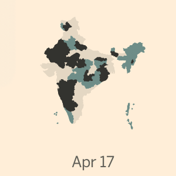 D3 clock D3 ternary Vibrational effect 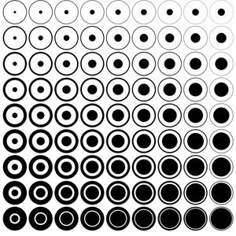 Proportional fonts Problems with dual Y axis Japan quake timeline